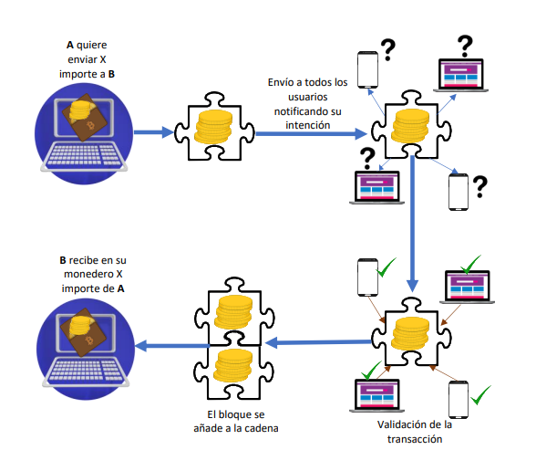
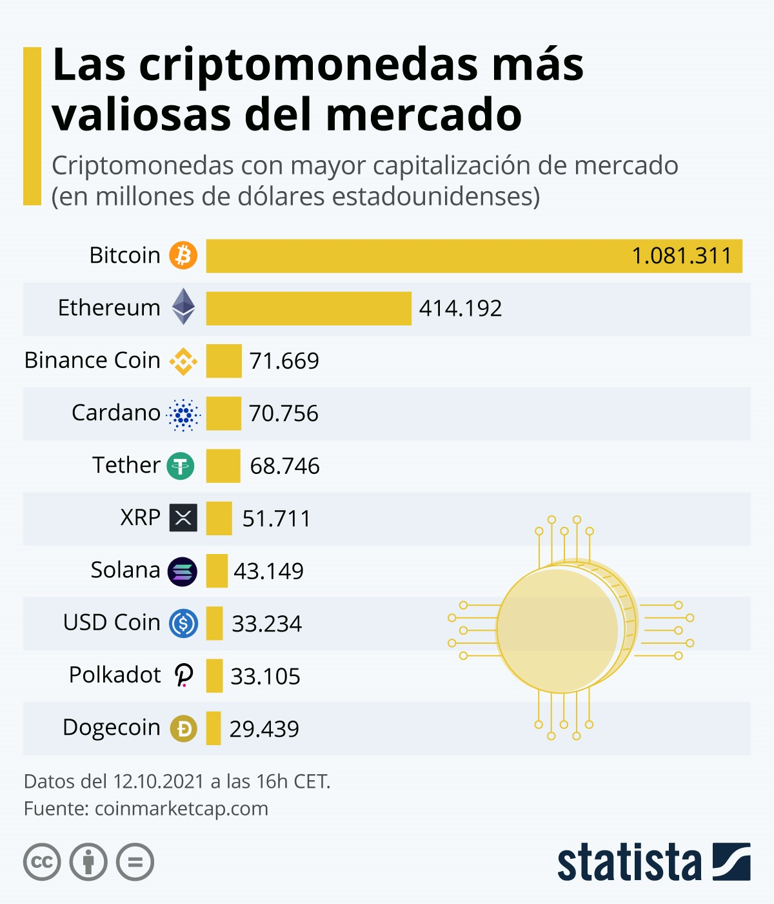
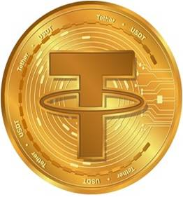

La Criptomoneda, también llamadas criptodivisas o criptoactivos, son un medio digital de intercambio, una moneda virtual, basada en la tecnología blockchain, que actúa como un libro de contabilidad en el que se registran las operaciones y que cuenta con programadores independientes como verificadores. El concepto o idea de Criptomoneda fue descrita por primera vez por Wei Dai, en 1998, donde propuso la idea de la creación de un nuevo tipo de dinero que utilizara la criptografía (Ciencia que estudia los sistemas, claves y lenguajes ocultos, siendo asimismo, una técnica que protege los datos y documentos de cualquier usuario) como medio de control. La Criptomoneda utiliza un cifrado criptográfico para asegurar transacciones financieras, verificar la transferencia de activos, controlar la creación de nuevas unidades adicionales, es decir, evitar que alguien pueda hacer copias, por ejemplo, con una foto o documento.
Las criptomonedas son monedas cuyo valor cambia de manera constante, por ello la gente invierte en criptomonedas. Una inversión hoy puede tener un valor de unos pocos dólares, y mañana obtener un beneficio de miles de dólares.
Como ilustra el anterior gráfico, Bitcoin (criptomoneda de la que se hablá más tarde), la mayor criptomoneda con diferencia, representa el 41% de la capitalización total del mercado de criptodivisas actualmente, mientras que la segunda más grande, Ethereum, supone alrededor del 18%. Entre los actores más pequeños de este mercado se encuentran Binance Coin, con un valor actual de 109.000 millones de dólares, seguido de Tether, que ocupa el cuarto lugar con una capitalización de mercado de 75.000 millones.
Nueve años desde la creación de bitcoin han sido suficientes para iniciar una fiebre financiera que ha llevado a tres millones de personas —según estima un estudio de la Universidad de Cambridge— a convertirse en usuarios de criptomonedas.
Según el gráfico a continuación, las criptomonedas más valiosas en el mundo son:
El auge y las suculentas ganancias que parece que dan algunas de las monedas virtuales ha contribuido a su expansión, actualmente, existen más de 10 mil tipos de criptomonedas, pero solo pocas tienen un valor verdadero, entre estás podemos encontrar las siguientes cinco:
Bitcoin (BTC)
Es una moneda virtual o un medio de intercambio electrónico, la cual es reconocida por ser la primera criptomoneda digital de fuente abierta que sirve para adquirir productos y servicios como cualquier otra moneda. No tiene ningún servidor centralizado utilizado para su emisión, transacciones y almacenamiento, ya que utiliza una tecnología de base de datos pública de red distribuida llamada blockchain.

Ethereum, Ether (ETH)
Plataforma digital que adopta la tecnología de cadena de bloques (blockchain) y expande su uso a una gran variedad de aplicaciones. Ether, su criptomoneda nativa, es la segunda más grande del mercado, después de Bitcoin.
Tether (USDT)
Tether es una herramienta financiera capaz de interactuar con redes blockchain, cuya característica principal es que su valor está respaldado por una moneda fiduciaria con la que mantiene paridad. Dada la volatilidad de las criptomonedas como Bitcoin o Ether, nacieron las criptomonedas estables, o stablecoins, cuyo propósito es tratar de reducir la volatilidad de las monedas virtuales, Tether es una stablecoin.
USD Coin (USDC)
Es una de las principales stablecoins en el mercado, esta vinculada al dólar estadounidense y puede gestionarse en diversas plataformas como lo es Etherum.
Binance Coin (BNB)
Es la unidad monetaria fundamental para pagar el coste de las transacciones y ejecuciones de contratos y aplicaciones en la BNB Smart Chain. Cuenta con el símbolo BNB originalmente basada en la cadena de bloques de Ethereum (actualmente tiene la propia llamada BEP-20).